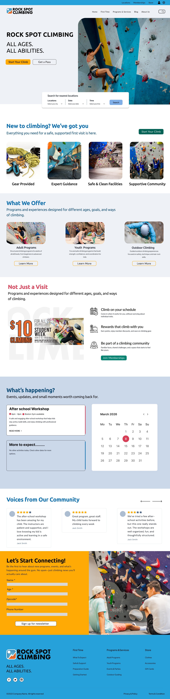
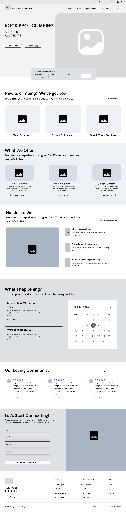
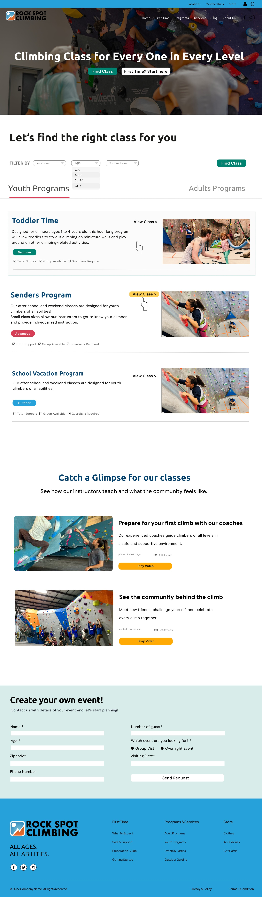
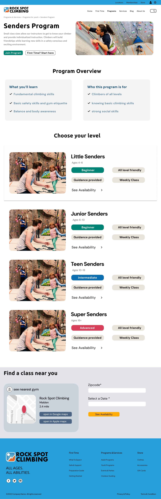

Academic Website Redesign
Rock Spot Climbing
Redesigning a climbing gym website into a clearer, beginner-friendly experience for first visits, program discovery, and class booking.

Project Overview
Creating a clearer starting point for new climbers
Rock Spot Climbing offers climbing programs, memberships, events, outdoor guiding, and store-related services. The redesign focused on helping new and returning visitors quickly understand what Rock Spot offers, how to prepare for a first visit, and how to find the right program or class.
Instead of treating the homepage as a content dump, I structured it as a guided path: understand the first-time experience, explore programs, consider membership, check events, and stay connected.
Challenge
Many entry points, but not enough guidance
Climbing gyms serve very different users: first-time visitors, parents, youth climbers, adult climbers, members, outdoor climbers, and event planners. The challenge was to make those paths easier to understand without flattening all of the content into one generic experience.
I focused on building a structure that answers the questions a beginner would naturally have: What do I need? Is it safe? Which program fits me? Where is the nearest location? What should I do next?
Wireframe
Mapping the homepage as a guided onboarding flow
I started with wireframes to test the order of information before refining visual style. The homepage wireframe organized the experience around first-time support, program categories, membership value, events, community proof, and a newsletter/contact section.

Early homepage wireframe mapping the experience from first-time support to programs, events, community, and newsletter sign-up.
Design Decision 01
Making the first visit feel less intimidating
The homepage introduces Rock Spot with direct language, a location search, and a first-time support section. Instead of assuming users already know what climbing requires, the design highlights gear, expert guidance, safe facilities, and community support.
This creates a more welcoming entry point for users who may be interested in climbing but unsure how to begin.
Design Decision 02
Helping users find the right class faster
For the programs page, I organized class discovery around a clearer filtering flow. Users can explore youth and adult programs, filter by age, location, and course level, and compare program options without reading through a long undifferentiated list.
The page also uses video/content modules to make the class experience feel more tangible before a user commits.

Design Decision 03
Turning program details into an availability path
The Senders Program detail page breaks the program into clearer sections: overview, what users will learn, who the program is for, level options, and class availability. This helps parents and new climbers understand the program before choosing a level or searching for a nearby class.
The flow connects information with action, moving users from program understanding to location and date selection.

Final Design
A more structured website for climbing discovery
The final design system uses stronger visual hierarchy, clearer calls to action, and more consistent page patterns across the homepage, program browsing, and program detail pages.
This structure helps users move from curiosity to action: learning what to expect, finding the right program, and checking availability at a nearby location.
Outcome
From scattered information to a beginner-friendly journey
This project strengthened my ability to use wireframes and information architecture to shape a website redesign. The final experience is more welcoming for first-time climbers and more structured for users comparing programs, memberships, locations, and class options.